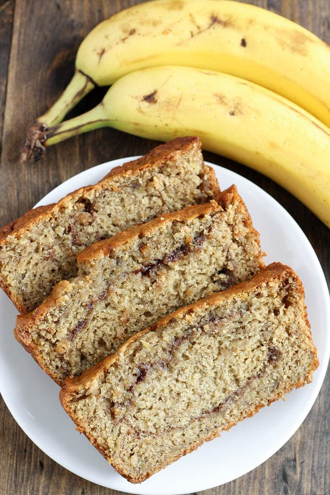

BANANA BREAD
This classic Banana Bread recipe is moist, flavorful, and easy to make. Use ripe bananas for the best results. Enjoy it for breakfast or as a delicious snack.

This classic Banana Bread recipe is moist, flavorful, and easy to make. Use ripe bananas for the best results. Enjoy it for breakfast or as a delicious snack.